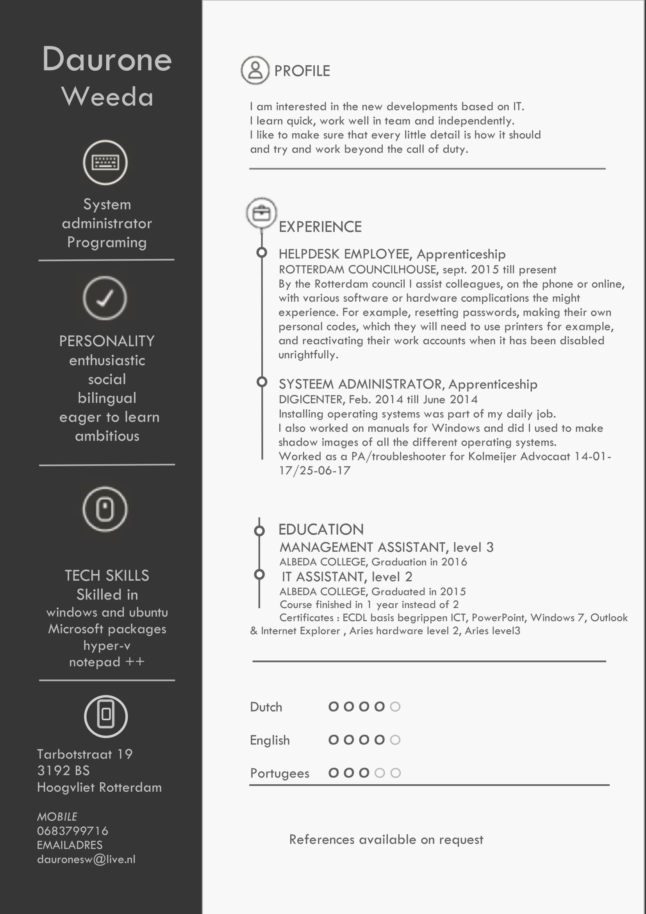

Here you will find my resume where you'll be able to find all my information and experiences as a student or as an intern.
As my resume states I did my interschips at multiple comanies, A Company called digicenter unlike most of my colleuges at the time it was for four months only. this was the case because i was about to finish my study as a IT assistant in one year instead of two years, at the Albeda College in Schiedam. My second Internschip was at the Government of Rotterdam As a helpdesk employee of there IT department
